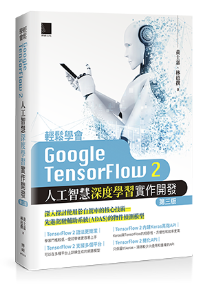

| 書號 | 圖 | 書名 |
| MP32104 |
|
Python程式設計實務-從入門到精通step by step |
| MP12101 |
|
Scrum敏捷產品管理：打造客戶喜愛的產品 |
| MP22026 |
|
重新認識Vue.js：008天絕對看不完的Vue.js 3指南 |
| MP22110 |
|
一開始就學對 Android－Kotlin 與 MVVM 新架構 |
| MP22036 |
 |
輕鬆學會Google TensorFlow 2人工智慧深度學習實作開發(第三版) |
| MP22105 |
|
PHP網路爬蟲開發：入門到進階的爬蟲技術指南（iT邦幫忙鐵人賽系列書） |
| MP12033 |
|
Kent Beck的測試驅動開發：案例導向的逐步解決之道 |
| MP32017 |
|
Python全面攻略：從程式新人到開發設計的快速學習 |
| MM32101 |
|
打造集客瘋潮的微電影行銷術：影音剪輯實戰×行動影音剪輯×特效處理×微電影實作×影音社群行銷 (暢銷回饋版) |
| MP22108 |
|
APCS大學程式設計先修檢測：C語言超效解題致勝祕笈(暢銷回饋版) |
| MM32001 |
|
PhotoShop影像處理設計 |
| MM32002 |
|
Illustrator向量圖形設計 |
| MP22028 |
|
C#程式設計從入門到專業(上)：完全剖析C#技術實務 |
| MP22029 |
|
C#程式設計從入門到專業(下)：職場C#進階應用技術 |
| MP32022 |
|
圖解資料結構－使用C++ |
| MI22005 |
|
視覺化社群行銷與SEO超級淘金術：使用Instagram與YouTube |
| MP22040 |
|
LINE Bot by Python 全攻略：從Heroku到AWS跨平台實踐（iT邦幫忙鐵人賽系列書） |
| MI22101 |
|
超強Google雲端應用：贏家必勝技能與行銷方程式(暢銷回饋版) |
| MP12019 |
|
行動裝置深度學習 |
| MP22109 |
|
圖說演算法：使用C語言(暢銷回饋版) |